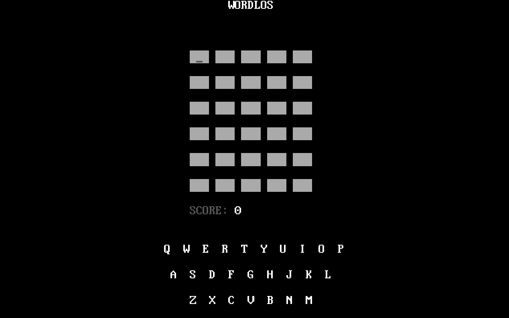

WORDLOS - Wordle Clone for DOS
Just another clone of Wordle for DOS using x86 16bit Assembly.

Play Online
Download
Binary version of this game can be downloaded at the Releases section.
Building
WORDLOS is built using NASM. So once you have that installed, all you need to do is:
$ make
In case there are no make tool available, you can directly compile it with:
$ nasm -f bin -o wordlos.com wordlos.asm
In both cases, a wordlos.com file will be generated and it can be run on DOS, DOSBox or FreeDOS.
License
This project is licensed under the MIT License.